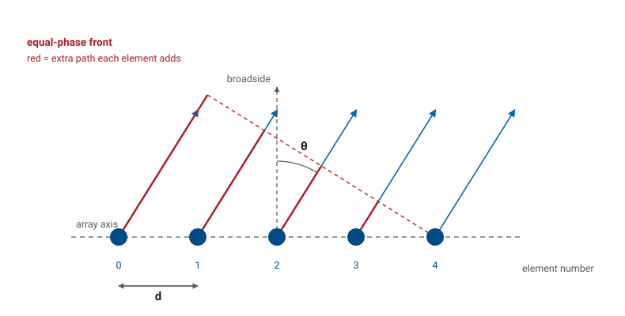
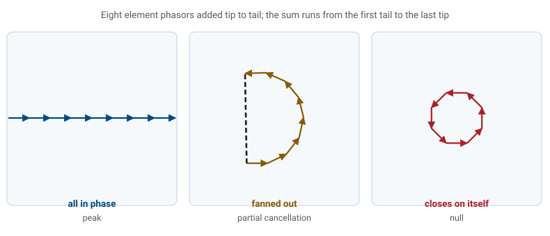
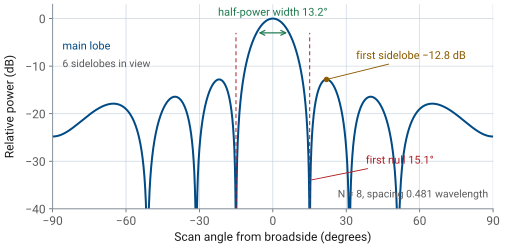
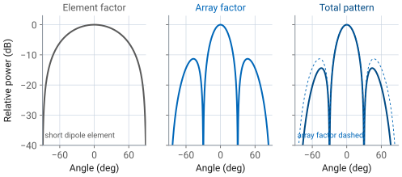
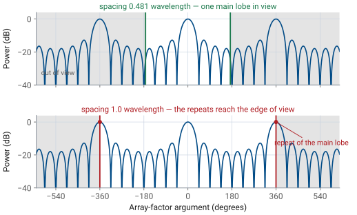
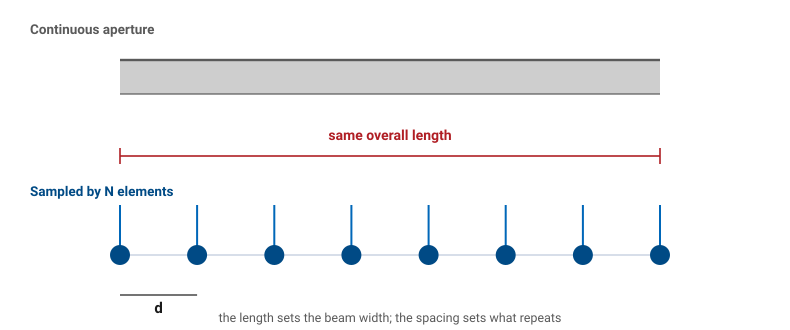

L16 - The Array Factor and Pattern Multiplication#
The Array Factor and Pattern Multiplication
The sum collapses into one compact expression — the array factor.
Lesson 16 · Antennas, Phased Arrays, and Radar Systems · Dr. Neil Rogers
Learning Objectives
- I can derive the array factor of an arbitrary linear array by summing element phasors.
- I can reduce the array factor of a uniform N-element array to its closed form and locate its main lobe, nulls, and sidelobes.
- I can apply pattern multiplication to combine an element pattern with an array factor.
- I can relate element spacing in wavelengths to the visible region and the onset of grating lobes.
- I can connect the discrete array factor to the continuous line source of Lesson 6 as a sampled aperture.
Lesson 15 treated an aperture as a continuous sheet of current and read its beamwidth from the aperture length and its sidelobes from the taper. Now replace that continuous aperture with \(N\) discrete elements on a line, each fed its own copy of the signal. The far fields still add as phasors, so the same reasoning applies, and the sum collapses into one compact expression — the array factor — that carries every feature you will measure on the PHASER for the rest of this module.
N elements, one sum
Put \(N\) identical elements on a straight line, spaced a distance \(d\) apart, and feed element \(n\) a copy of the same signal with complex weight \(a_n\). Every element radiates the same pattern; only the weights and the positions differ.

The scan angle
Module 3 measures the scan angle \(\theta\) from broadside — the direction perpendicular to the array face — with \(-90^\circ \le \theta \le +90^\circ\). Every PHASER plot, the GUI’s angle axis, and the phased-array literature use this convention.
Module 1 measured the polar angle from the \(+z\) axis for a line source lying on \(z\). The two are the same picture read from different reference directions:
so the space frequency \(k_z = k\cos\theta_{\text{polar}}\) of Lesson 6 becomes \(k\sin\theta\) here. Broadside, which was \(\theta_{\text{polar}} = 90^\circ\), is now \(\theta = 0\). This is the only place in the course the two conventions are set side by side; from here on \(\theta\) means the scan angle.
Step 1 — the extra path
A far-field observer sees the array from a single direction, so the rays leaving the elements are parallel. Element \(n\) sits \(nd\) farther along the array axis than element 0, and along a ray heading off at angle \(\theta\) that position advances the ray by
Step 2 — path becomes phase
Distance turns into phase through the wavenumber \(k = 2\pi/\lambda\). A path advance of \(\Delta r_n\) is a phase lead of \(k\ \Delta r_n\), so element \(n\) arrives at the observer carrying
relative to element 0. The amplitude difference between elements is negligible in the far field — a few centimeters of array against tens of meters of range — so only the phase matters.
Step 3 — superposition
Superposition finishes the job. The total far field is the sum of the element fields, and the common factor \(E_0(\theta)\ e^{-jkr}/r\) pulls out in front:
Step 4 — the array factor
The array factor is that sum:
It depends only on how many elements there are, where they sit, and what you feed them. It knows nothing about what kind of antenna the elements are.
Step 5 — collect the phases
If the weights carry a progressive phase, \(a_n = \vert a_n\vert\ e^{-jn\beta}\), that phase rides along with the geometric term. Collect both into one argument,
where \(\beta = kd\sin\theta_0\) is the ramp that steers the beam to \(\theta_0\). Lesson 18 derives that ramp. For the rest of today \(\theta_0 = 0\) and \(\psi = kd\sin\theta\), so every result below is the broadside case.
Key point
The array factor is a sum of unit phasors, one per element, whose phases advance by \(kd\sin\theta\) from element to element. Everything an array does to a pattern comes out of how those phasors line up.
What the sum looks like

Read the three cases from left to right. At \(\psi = 0\) every phasor points the same way and the sum is \(N\), the largest it can be. As \(\psi\) grows the chain fans out and the sum shortens. When the fan has turned through a full circle — \(N\psi = 2\pi\) — the chain closes on itself and the sum is exactly zero. That is the first null, and it is the whole content of the closed form below.
Uniform excitation
Set every weight to 1. The sum becomes a geometric series in \(e^{j\psi}\):
Closing the series
Factor half the exponent out of the numerator and the denominator:
The closed form
The leading exponential is the phase of the array’s center relative to element 0. Reference the phase to the center instead and it disappears. Divide by \(N\) so the peak is 1:
Every feature of the pattern is now readable from that one line.
Anatomy: main lobe and nulls
Main lobe. At \(\psi = 0\) both numerator and denominator vanish; the limit is 1. So the peak sits where \(\sin\theta = \sin\theta_0\), which at broadside is \(\theta = 0\). The function is periodic in \(\psi\) with period \(2\pi\), so the peak repeats every \(2\pi\) — hold that thought until Part 4.
Nulls. The numerator vanishes when \(N\psi/2 = m\pi\), and the denominator is nonzero as long as \(m\) is not a multiple of \(N\):
The nulls are set by \(N\) and by the total length \(Nd\), not by \(d\) alone.
Anatomy: sidelobes
Sidelobes. Between consecutive nulls the numerator swings back to \(\pm 1\), so a sidelobe sits in each gap: \(N-2\) of them across one period. Their heights fall off as \(1/\sin(\psi/2)\), so the tallest is the one nearest the main lobe. Setting \(N\psi/2 \approx 3\pi/2\) gives the first sidelobe at
or about \(-13.5\) dB. Locating that peak exactly rather than at \(3\pi/2\) moves it to \(-13.3\) dB, which is the uniform line-source number from Lesson 6 reached from the other direction. At \(N = 8\) the value is \(-12.8\) dB. Call it \(-13\) dB. Uniform excitation leaves the first sidelobe about 13 dB below the peak in a discrete array exactly as it did in the continuous aperture of Lesson 15, and Lesson 24 lowers it with a taper.
The eight-element array factor

Reading the closed form — main lobe and nulls
Feature |
Where it comes from |
Uniform array value |
|---|---|---|
Main-lobe peak |
\(\psi = 0\) |
\(\theta = \theta_0\) |
Null \(m\) |
\(\psi = 2\pi m/N\) |
\(\sin\theta_m = \sin\theta_0 + m\lambda/Nd\) |
First-null beamwidth |
\(m = \pm 1\), broadside |
\(2\arcsin(\lambda/Nd)\) |
Reading the closed form — beamwidth and sidelobes
Feature |
Where it comes from |
Uniform array value |
|---|---|---|
Half-power beamwidth |
line-source constant, \(L = Nd\) |
\(\approx 0.886\ \lambda/(Nd\cos\theta_0)\) |
First sidelobe |
\(N\psi/2 \approx 3\pi/2\) |
\(-13\) dB (\(-12.8\) dB at \(N = 8\)) |
Sidelobe count |
nulls at \(2\pi m/N\) |
\(N - 2\) per period |
The beamwidth entries are quoted here and derived in Lesson 20.
Pattern multiplication
Nothing in Part 1 required the elements to be isotropic. It required them to be identical and identically oriented, which let \(E_0(\theta)\) come out of the sum. That factoring is the whole theorem:
The element factor \(EF\) is the pattern one element would produce by itself. The array factor \(AF\) is what the arrangement adds. Multiply them and you have the array’s pattern. In decibels the two curves add, which is why a log plot is the natural place to check the result.
This is the Lesson 6 split — pattern equals element factor times space factor — with the continuous space factor replaced by a discrete sum. The element factor is the physics of the radiator; the array factor is the bookkeeping of where you put it and what you feed it.
Worked example — four short dipoles
Worked example — four collinear short dipoles
Four short dipoles lie end to end along the array axis, spaced \(d = \lambda/2\), all fed in phase.
A short dipole radiates as \(\sin\theta_{\text{polar}}\), which in scan angle is \(EF(\theta) = \cos\theta\): a broad lobe at broadside, a null along the array axis at \(\theta = \pm 90^\circ\).
The array factor is \(AF_4\) with \(\psi = \pi\sin\theta\). Its nulls fall at \(\sin\theta_m = m/2\), that is \(\pm 30^\circ\) and \(\pm 90^\circ\), and its first sidelobe is \(-11.3\) dB at \(\theta = \pm 47.1^\circ\).
Worked example — four short dipoles, continued
Worked example — four collinear short dipoles
Now multiply the two factors. At the sidelobe angle the element factor contributes \(\cos(47.1^\circ) = 0.681\), or \(-3.3\) dB, so the total pattern’s first sidelobe is
The element factor did two things: it pushed the sidelobes down, more so the farther off broadside they sit, and it deepened the null at \(\pm 90^\circ\) that the array factor already had. It changed the main-lobe width by almost nothing, because \(\cos\theta\) is flat near broadside.
Element × array

That last observation generalizes. A directive element reshapes the skirts of the pattern and suppresses whatever the array factor puts at wide angles, but the main lobe belongs to the array. Beamwidth is the array’s business; wide-angle behavior is shared.
Interactive — the array factor builder
The widget below builds the array factor one control at a time. Start at the course array — \(N = 8\), \(d/\lambda = 0.481\) — and confirm the pills against Part 2: half-power width \(13.2^\circ\), first null \(15.1^\circ\), first sidelobe \(-12.8\) dB. Then sweep \(N\) and watch the beam narrow while the sidelobe level holds near \(-13\) dB, since \(N\) sets the width and the shape of the excitation sets the sidelobes. Switch the element factor on to see pattern multiplication happen: the dashed \(\cos\theta\) envelope pulls the outer lobes down and leaves the main lobe alone. Then push \(d/\lambda\) toward 1.5 and watch a second full-height beam walk in from the edge — Part 4 names it.
The visible region
\(AF_N(\psi)\) repeats every \(2\pi\) in \(\psi\), but \(\psi\) is not free — it is tied to a real angle by \(\psi = kd(\sin\theta - \sin\theta_0)\). As \(\theta\) sweeps the whole visible half-space from \(-90^\circ\) to \(+90^\circ\), \(\sin\theta\) covers \(-1\) to \(+1\) and \(\psi\) covers
a window of total width \(2kd = 4\pi d/\lambda\) that slides as you steer. That window is the visible region. Angles outside it are mathematics, not radiation.
Now compare the window to the period. The window is \(4\pi d/\lambda\) wide and the period is \(2\pi\), so the window holds more than one period as soon as \(d \ge \lambda\). A second copy of the main lobe — full height, since \(AF_N\) is exactly periodic — enters real space. That copy is a grating lobe, and it radiates as much power as the beam you asked for.
One window, two spacings

Grating lobes
Grating lobes appear where \(\psi\) is a nonzero multiple of \(2\pi\):
Requiring that no such \(\theta_g\) be real gives the design rule:
The grating-lobe criterion
At broadside this is \(d < \lambda\). Scanning to \(\pm 90^\circ\) tightens it to \(d < \lambda/2\), which is where the familiar half-wavelength spacing comes from. Lesson 26 treats grating lobes in full, alongside beam squint and phase quantization; Use the criterion as stated until then.
Note
Element spacing is a two-sided trade. Too large and a grating lobe appears. Too small and the array is short for its element count, so the beam is wide and the elements couple strongly to each other. Most designs land between \(0.4\lambda\) and \(0.5\lambda\).
The array as a sampled aperture
Line up the two results. A uniform line source of length \(L\) has a beamwidth \(\approx 0.886\ \lambda/L\) and a first sidelobe of \(-13.3\) dB. A uniform array of \(N\) elements spaced \(d\) has a beamwidth \(\approx 0.886\ \lambda/(Nd)\) and a first sidelobe of \(-13\) dB. The array is that line source sampled every \(d\).

What each parameter controls
The sampled view assigns each parameter its job:
Total length \(Nd\) sets the beamwidth. Two arrays with the same \(Nd\) have nearly the same main lobe whether that length is filled by 8 elements or 32.
The excitation shape sets the sidelobes. Uniform gives \(-13\) dB, in the array exactly as in the aperture. Lesson 24 tapers it.
The spacing \(d\) sets what repeats. Sampling a function periodizes its transform; the period is the grating lobe. A continuous aperture has no grating lobes because it is not sampled.
Worked example — the course array
Worked example — the course 8-element array
The PHASER carries 8 patch elements spaced \(d = 14\ \text{mm}\). At \(10.3\ \text{GHz}\), \(\lambda = 29.1\ \text{mm}\), so \(d/\lambda = 0.481\) and the array is \(Nd = 112\ \text{mm} = 3.85\lambda\) long.
Visible region. \(kd = 2\pi(0.481) = 3.02\ \text{rad} = 173.2^\circ\), so \(\psi\) runs over \(\pm 173.2^\circ\) at broadside — just short of one full period. No grating lobe. The spacing criterion \(d < \lambda/(1 + \vert\sin\theta_0\vert)\) is satisfied for every scan angle out to \(\pm 90^\circ\), which is why the element spacing is set below half a wavelength.
Worked example — the course array, continued
Worked example — the course 8-element array
Nulls. \(\sin\theta_m = m\lambda/Nd = m/3.85\), giving \(\pm 15.1^\circ\), \(\pm 31.3^\circ\), and \(\pm 51.2^\circ\). The \(m = 4\) null would need \(\sin\theta = 1.04\), so it never reaches real space and the array shows 6 sidelobes across the visible region.
Beam. FNBW \(= 2\arcsin(1/3.85) = 30.1^\circ\); HPBW \(\approx 0.886\lambda/Nd = 13.2^\circ\); first sidelobe \(-12.8\) dB at \(\pm 21.9^\circ\); directivity \(\approx 2Nd/\lambda = 7.7\), or \(8.9\) dB.
Worked example — the course array, continued
Worked example — the course 8-element array
What the sweep will show. In Lesson 21 you will steer this array past a fixed source and record power against commanded angle. Expect a main lobe near \(13^\circ\) wide, a first null a little past \(15^\circ\), and sidelobes 11 to 13 dB down. The measured beam reads \(13.1^\circ\) and the nulls fill in: the sweep steps in \(2.8125^\circ\) increments and the receiver’s noise floor sits about 23 dB below the peak, so a mathematical zero measures as a finite dip.
Summary — the array factor and its closed form
Symbol / idea |
What it is |
Number to remember |
|---|---|---|
\(AF(\theta) = \sum a_n e^{jnkd\sin\theta}\) |
phasor sum over elements |
one term per element |
\(\psi = kd(\sin\theta - \sin\theta_0)\) |
array-factor argument |
\(\pm 173^\circ\) visible at \(d/\lambda = 0.481\) |
\(AF_N = \sin(N\psi/2)/(N\sin(\psi/2))\) |
uniform array, peak 1 |
nulls at \(\psi = 2\pi m/N\) |
Summary — sidelobes
Symbol / idea |
What it is |
Number to remember |
|---|---|---|
First sidelobe |
uniform excitation |
\(-13\) dB (\(-12.8\) dB at \(N = 8\)) |
Sidelobe count |
between the nulls |
\(N - 2\) per period |
Summary — multiplication and spacing
Symbol / idea |
What it is |
Number to remember |
|---|---|---|
\(\vert F\vert = \vert EF\vert \times \vert AF\vert\) |
pattern multiplication |
identical elements only |
\(d < \lambda/(1 + \vert\sin\theta_0\vert)\) |
grating-lobe criterion |
\(d < \lambda/2\) to scan to \(90^\circ\) |
\(Nd\) |
array length |
HPBW \(\approx 0.886\lambda/Nd\); \(13.2^\circ\) for the PHASER |
Practice
Where this is going
Today’s array was fed by assumption: element \(n\) simply received weight \(a_n\). Lesson 17 opens the hardware that produces those weights — the ADAR1000 beamformer chips, the per-element gain and phase controls, and the receive chain that turns eight elements into two digitized channels. Lesson 18 then sets the weights to a progressive phase ramp and steers the beam, which is the \(\theta_0\) that has been sitting unused in \(\psi\) all lesson.
Every lab in this module measures some feature of today’s array factor. Lesson 21 measures the beamwidth, the nulls, and the sidelobe level of the uniform 8-element pattern. Lesson 25 changes the weights and watches the sidelobes drop. Lesson 28 places a null where you want one. Before the next lesson, be able to write \(AF_N\) from memory and locate its nulls, because every one of those labs starts by predicting from it.